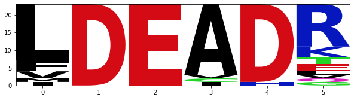
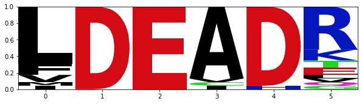
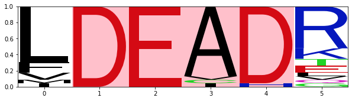
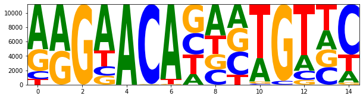
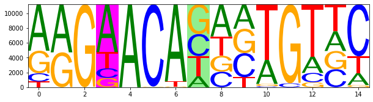

import Bio
from Bio import motifs
from Bio.Seq import Seq2 Motif analysis
A set of sequences of equal length can be used to create a motif. The create() function in the motifs class takes a list of sequence objects as an argument to instantiate a motif object.
seq_list = [Seq("TACAA"), Seq("TACGC"), Seq("TACAC"), Seq("TACCC"), Seq("AACCC"), Seq("AATGC"), Seq("AATGC")]
m1 = motifs.create(seq_list)
print(m1)
print("The length of motif is", len(m1))TACAA
TACGC
TACAC
TACCC
AACCC
AATGC
AATGC
The length of motif is 5The counts function returns the frequency of each alphabet at all the positions in the motif. Frequency of a particular alphabet at different positions within the motif can also be accessed. The concensus function returns the concensus sequence for the motif.
print(m1.counts)
print("The frequency of 'A' at different positions in the motif is:", m1.counts["A"])
print("The frequency of 'A' at the first position is:", m1.counts["A",0])
print("The concensus sequence for the motif is:",m1.consensus) 0 1 2 3 4
A: 3.00 7.00 0.00 2.00 1.00
C: 0.00 0.00 5.00 2.00 6.00
G: 0.00 0.00 0.00 3.00 0.00
T: 4.00 0.00 2.00 0.00 0.00
The frequency of 'A' at different positions in the motif is: [3.0, 7.0, 0.0, 2.0, 1.0]
The frequency of 'A' at the first position is: 3.0
The concensus sequence for the motif is: TACGCTo search a particular motif in a sequence, the search function for the sequence object can be used with motif object as an argument. The function returns a tuple having the position and the sequence (from the sequence object) matching any of the sequences in the motif.
sequence_set = [Seq("AACCGGTT"),Seq("AACCCGTT"),Seq("CATTACAA")]
motif_p1 = motifs.create(sequence_set)
print(motif_p1.alignment.sequences)[Seq('AACCGGTT'), Seq('AACCCGTT'), Seq('CATTACAA')]test_seq=Seq("TACACTGCATTACAACCCAAGAACCCGTT")
for pos, seq in test_seq.search(motif_p1.alignment.sequences):
print(f'{pos} {seq}')7 CATTACAA
21 AACCCGTT2.0.1 Motif for protein sequences
By default, the create() function considers the input sequence as a DNA sequence. For creating a motif for protein sequences, the keyword argument alphabet need to be specified the all the amino acids in single letter code.
prot_seqs = [Seq("LXXLL"),Seq("LXXLL")]
motif_prot = motifs.create(prot_seqs,alphabet="ACDEFGHIKLMNPQRSTVWXY")
print(motif_prot.counts) 0 1 2 3 4
A: 0.00 0.00 0.00 0.00 0.00
C: 0.00 0.00 0.00 0.00 0.00
D: 0.00 0.00 0.00 0.00 0.00
E: 0.00 0.00 0.00 0.00 0.00
F: 0.00 0.00 0.00 0.00 0.00
G: 0.00 0.00 0.00 0.00 0.00
H: 0.00 0.00 0.00 0.00 0.00
I: 0.00 0.00 0.00 0.00 0.00
K: 0.00 0.00 0.00 0.00 0.00
L: 2.00 0.00 0.00 2.00 2.00
M: 0.00 0.00 0.00 0.00 0.00
N: 0.00 0.00 0.00 0.00 0.00
P: 0.00 0.00 0.00 0.00 0.00
Q: 0.00 0.00 0.00 0.00 0.00
R: 0.00 0.00 0.00 0.00 0.00
S: 0.00 0.00 0.00 0.00 0.00
T: 0.00 0.00 0.00 0.00 0.00
V: 0.00 0.00 0.00 0.00 0.00
W: 0.00 0.00 0.00 0.00 0.00
X: 0.00 2.00 2.00 0.00 0.00
Y: 0.00 0.00 0.00 0.00 0.00
2.0.2 Motif from MSA
from Bio import AlignIO
DEAD_align = AlignIO.read("DEAD2.aln","clustal")
print(DEAD_align)Alignment with 23 rows and 1199 columns
--------------------------------------------...--- sp|P17844|DDX5_HUMAN
--------------------------------------------...--- sp|Q92841|DDX17_HUMAN
MNWNKGGPGTKRGFGFGGFAISAGKKEEPKLPQQSHSAFGATSS...--- sp|Q86XP3|DDX42_HUMAN
--------------------------------------------...--- sp|O00571|DDX3X_HUMAN
--------------------------------------------...--- sp|O15523|DDX3Y_HUMAN
--------------------------------------------...--- sp|Q9UHI6|DDX20_HUMAN
--------------------------------------------...--- sp|Q13838|DX39B_HUMAN
--------------------------------------------...--- sp|Q9UMR2|DD19B_HUMAN
--------------------------------------------...--- sp|P38919|IF4A3_HUMAN
--------------------------------------------...--- sp|P26196|DDX6_HUMAN
------------------------MVLAQRRRGGCEKLRAGPQA...--- sp|Q96GQ7|DDX27_HUMAN
--------------------------------------------...--- sp|Q9H0S4|DDX47_HUMAN
--------------------------------------------...KRM sp|Q8TDD1|DDX54_HUMAN
--------------------------------------------...--- sp|Q9NY93|DDX56_HUMAN
--------------------------------------------...--- sp|Q8NHQ9|DDX55_HUMAN
--------------------------------------------...--- sp|Q9NVP1|DDX18_HUMAN
----------------------MAPDLASQRHSESFPSVNSRPN...--- sp|Q9H8H2|DDX31_HUMAN
--------------------------------------------...--- sp|Q9UJV9|DDX41_HUMAN
...
--------------------------------------------...--- sp|Q9H2U1|DHX36_HUMANprint(DEAD_align[1:5,442:448])Alignment with 4 rows and 6 columns
LDEADR sp|Q92841|DDX17_HUMAN
FDEADR sp|Q86XP3|DDX42_HUMAN
LDEADR sp|O00571|DDX3X_HUMAN
LDEADR sp|O15523|DDX3Y_HUMANimport logomaker
import pandas as pd
import matplotlib.pyplot as pltinstances_DEAD = [s1.seq for s1 in DEAD_align[:,442:448]]
motif_DEAD = motifs.create(instances_DEAD, alphabet='ACDEFGHIKLMNPQRSTVWY')
#print(motif_DEAD.counts)
df_DEAD_motif = pd.DataFrame.from_dict(motif_DEAD.counts)
df_DEAD_motif| A | C | D | E | F | G | H | I | K | L | M | N | P | Q | R | S | T | V | W | Y | |
|---|---|---|---|---|---|---|---|---|---|---|---|---|---|---|---|---|---|---|---|---|
| 0 | 0.0 | 0.0 | 0.0 | 0.0 | 3.0 | 0.0 | 0.0 | 1.0 | 0.0 | 16.0 | 1.0 | 0 | 0 | 0.0 | 0.0 | 0 | 0.0 | 2.0 | 0 | 0 |
| 1 | 0.0 | 0.0 | 23.0 | 0.0 | 0.0 | 0.0 | 0.0 | 0.0 | 0.0 | 0.0 | 0.0 | 0 | 0 | 0.0 | 0.0 | 0 | 0.0 | 0.0 | 0 | 0 |
| 2 | 0.0 | 0.0 | 0.0 | 23.0 | 0.0 | 0.0 | 0.0 | 0.0 | 0.0 | 0.0 | 0.0 | 0 | 0 | 0.0 | 0.0 | 0 | 0.0 | 0.0 | 0 | 0 |
| 3 | 20.0 | 1.0 | 0.0 | 0.0 | 0.0 | 0.0 | 0.0 | 1.0 | 0.0 | 0.0 | 0.0 | 0 | 0 | 0.0 | 0.0 | 0 | 0.0 | 1.0 | 0 | 0 |
| 4 | 0.0 | 0.0 | 22.0 | 0.0 | 0.0 | 0.0 | 1.0 | 0.0 | 0.0 | 0.0 | 0.0 | 0 | 0 | 0.0 | 0.0 | 0 | 0.0 | 0.0 | 0 | 0 |
| 5 | 0.0 | 0.0 | 0.0 | 2.0 | 0.0 | 1.0 | 0.0 | 0.0 | 3.0 | 1.0 | 0.0 | 0 | 0 | 1.0 | 12.0 | 0 | 2.0 | 1.0 | 0 | 0 |
2.1 Logomaker
The logomaker package offers a rich set of functionality to work with sequences/motifs to create sequence logos. It can be installed via pip install logomaker. This library uses pandas and matplotlib to generate sequence logos. The savefig() function of the plt object can be used to save an image of the logo. The resolution of the reulting image can be adjusted using the dpi keyword argument. To draw sequence logo the Logo() function can be used which take the sequence motif in the form of pandas dataframe as an argument.
ss_logo = logomaker.Logo(df_DEAD_motif)
plt.savefig("fig1.png",dpi=300)
To normalize the values on the y-axis use normalize() function.
motif_pwm = motif_DEAD.counts.normalize()
df_motif_pwm = pd.DataFrame.from_dict(motif_pwm)
ss_logo_pwm = logomaker.Logo(df_motif_pwm)
2.2 Decorating logos
The logo fonts can be changed using the font_name argument. Positions within the logo can be highlighted by adding background color as shown below.
ss_logo_pwm = logomaker.Logo(df_motif_pwm,font_name='Franklin Gothic Book')
ss_logo_pwm.highlight_position(p=1, color='pink')
ss_logo_pwm.highlight_position(p=2, color='pink')
ss_logo_pwm.highlight_position(p=3, color='pink')
ss_logo_pwm.highlight_position(p=4, color='pink')
2.3 Reading motifs
Motif files such available from Jaspar database can be read directly to create a motif object.
df_jaspar_motif = pd.DataFrame()
fh = open("MA0007.2.jaspar")
for m in motifs.parse(fh, "jaspar"):
print(m.counts)
df_jaspar_motif = pd.DataFrame.from_dict(m.counts)
fh.close() 0 1 2 3 4 5 6 7 8 9 10 11 12 13 14
A: 6277.00 6497.00 0.00 6462.00 11206.00 26.00 10426.00 1478.00 4353.00 3312.00 3241.00 0.00 2214.00 2656.00 1599.00
C: 1112.00 0.00 0.00 1304.00 0.00 11115.00 0.00 2976.00 2096.00 3249.00 142.00 525.00 1262.00 2434.00 7032.00
G: 3049.00 4709.00 11206.00 1254.00 0.00 65.00 107.00 4023.00 2151.00 3291.00 305.00 10681.00 671.00 2460.00 298.00
T: 768.00 0.00 0.00 2186.00 0.00 0.00 673.00 2729.00 2606.00 1354.00 7518.00 0.00 7059.00 3656.00 2277.00
df_jaspar_motif| A | C | G | T | |
|---|---|---|---|---|
| 0 | 6277.0 | 1112.0 | 3049.0 | 768.0 |
| 1 | 6497.0 | 0.0 | 4709.0 | 0.0 |
| 2 | 0.0 | 0.0 | 11206.0 | 0.0 |
| 3 | 6462.0 | 1304.0 | 1254.0 | 2186.0 |
| 4 | 11206.0 | 0.0 | 0.0 | 0.0 |
| 5 | 26.0 | 11115.0 | 65.0 | 0.0 |
| 6 | 10426.0 | 0.0 | 107.0 | 673.0 |
| 7 | 1478.0 | 2976.0 | 4023.0 | 2729.0 |
| 8 | 4353.0 | 2096.0 | 2151.0 | 2606.0 |
| 9 | 3312.0 | 3249.0 | 3291.0 | 1354.0 |
| 10 | 3241.0 | 142.0 | 305.0 | 7518.0 |
| 11 | 0.0 | 525.0 | 10681.0 | 0.0 |
| 12 | 2214.0 | 1262.0 | 671.0 | 7059.0 |
| 13 | 2656.0 | 2434.0 | 2460.0 | 3656.0 |
| 14 | 1599.0 | 7032.0 | 298.0 | 2277.0 |
ss_logo = logomaker.Logo(df_jaspar_motif)
ss_logo = logomaker.Logo(df_jaspar_motif,font_name='Franklin Gothic Book')
ss_logo.highlight_position(p=3, color='magenta')
ss_logo.highlight_position(p=7, color='lightgreen')